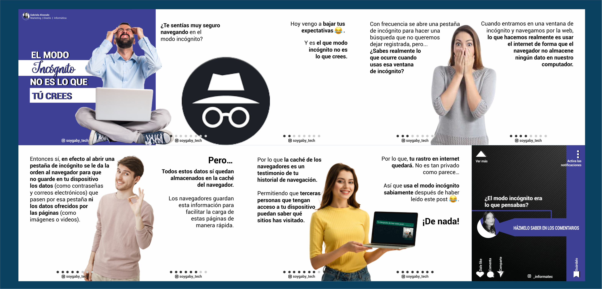
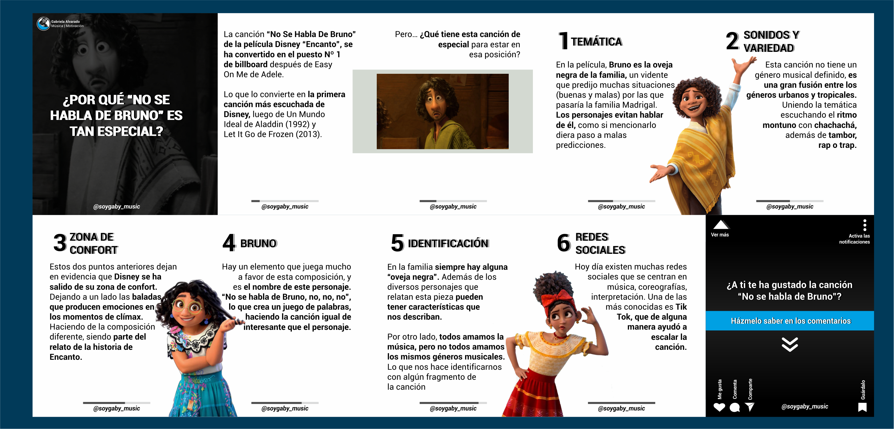

@soygaby_music
@soygaby_tech
@soygaby_music
@soygaby_tech
Soy María Gabriela Alvarado, pero puedes decirme Gaby. Soy honesta, organizada, autodidacta, sociable, con buen sentido del humor, amigable y respetuosa. Amo trabajar en base a estrategia, ya que objetivos pequeños a corto plazo, serán el fruto a largo plazo.
Me encanta el desarrollo Full Stack, crear páginas web estáticas y dinámicas, diseño gráfico, estrategias de Marketing Digital y SEO. En mis tiempos libres toco el teclado, la guitarra, la flauta dulce y canto.
Mi red social favorita es instagram, y creo contenido en de música y tecnología
Puedes acceder a mis cuentas al final de la página
¿Te has preguntado qué es realmente el modo incógnito y por qué no es lo que crees?
¿Te has preguntado el por qué "No se habla de Bruno" de la canción de Disney "Encanto" es tan especial?
Pásate por mi Instagram si deseas ver más contenido como este.